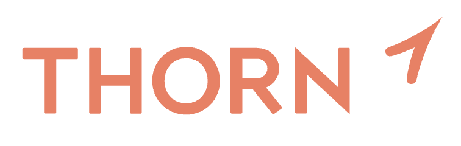
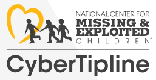
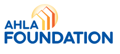

Learn what sextortion is, how it happens, warning signs to watch for, and what immediate steps victims, families, and supporters can take to report abuse and get help.
Visit ResourceOnline Safety Resources
Find trusted hotlines, research articles, case studies, and helpful websites to keep you and your loved ones safe online.
← Back to HomeEmergency Hotlines
If you or someone you know is in immediate danger, please contact these resources
National Human Trafficking Hotline
1-888-373-7888
Available 24/7 in multiple languages. Text "HELP" to 233733.
Learn MoreNational Center for Missing & Exploited Children
1-800-843-5678
Report child sexual exploitation and missing children 24/7.
Learn MoreNews Articles & Research
Stay informed with the latest research and news on online safety
Research Study
Parental Controls for Online Safety are Underutilized, New Study Finds
Published: May 2025
The Family Online Safety Institute finds that while parental controls are widely available, most parents underutilize them across devices, though open communication remains a key tool for keeping children safe online.
Read Article
News Article
Risks to children playing Roblox ‘deeply disturbing’, say researchers
Published: April 2025
The Guardian exposes that children on Roblox can easily encounter sexually suggestive content and interact unsupervised with adults, exposing serious gaps in the platform’s safety measures despite parental controls.
Read ArticleCase Studies
Real-world examples of online safety challenges and solutions
Case Study
The Sweetie Campaign
Year: 2015
The Sweetie campaign, run by Terre des Hommes, uses a computer-generated child avatar to expose and raise awareness about web-cam sex tourism targeting children in the Philippines. It aims to influence public opinion and drive policy changes to combat online sexual exploitation.
Read Full Study
Case Study
New Mexico Lawsuit against Meta
Year: 2023
New Mexico Attorney General Raúl Torrez filed a lawsuit against Meta and CEO Mark Zuckerberg, alleging that Facebook and Instagram expose children to sexual abuse, human trafficking, and child sexual abuse material (CSAM). The complaint claims the platforms actively enable predators, fail to protect minors, and prioritize engagement and ad revenue over children’s safety.
Read Full StudyHelpful Websites
Trusted organizations and resources for online safety education

Read an overview of sextortion that combines research findings and survivor-informed context, including how offenders use coercion, non-consensual image capture, and online platforms to exploit victims.
Visit Resource
Submit a report of suspected child sexual exploitation through NCMEC's CyberTipline and access reporting support and additional help resources.
Visit ResourceExplore Thorn's victim identification tools and partnerships that help investigators, digital forensic platforms, and law enforcement identify child victims in CSAM cases more quickly.
Visit ResourceFind step-by-step instructions for reporting explicit images or videos to major platforms and requesting removal of sexual content involving minors or non-consensual sharing.
Visit Resource
Access free anti-trafficking training for the hotel and lodging industry, with courses focused on recognizing warning signs, responding appropriately, and strengthening prevention efforts.
Visit ResourceBrowse a searchable resource library with research, reports, webinars, and training materials on human trafficking, child labor, survivor services, prevention, and related justice issues.
Visit ResourceLearn why human trafficking data is often undercounted, including challenges in identifying incidents, inconsistent reporting practices, and gaps in law enforcement data collection.
Visit ResourceReview research on risk factors linked to CSAM users contacting children online, including patterns of use, exposure history, and other behaviors associated with higher risk.
Visit Resource